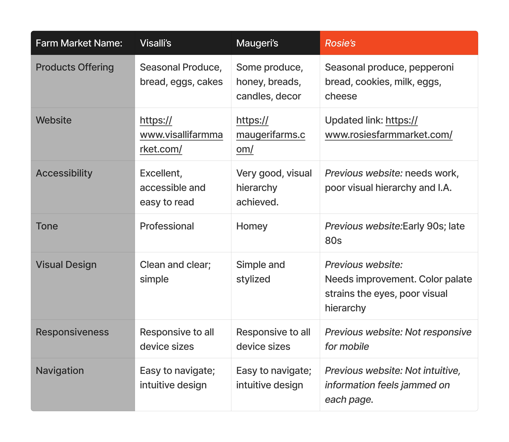
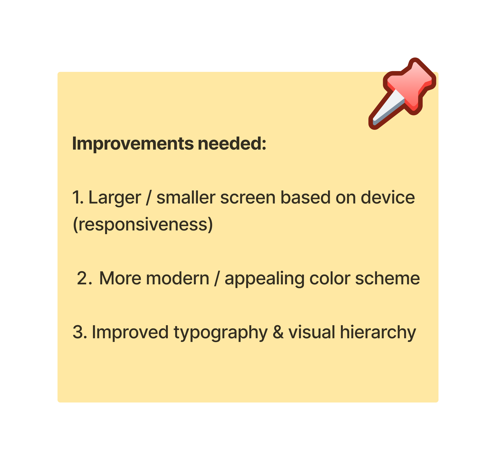
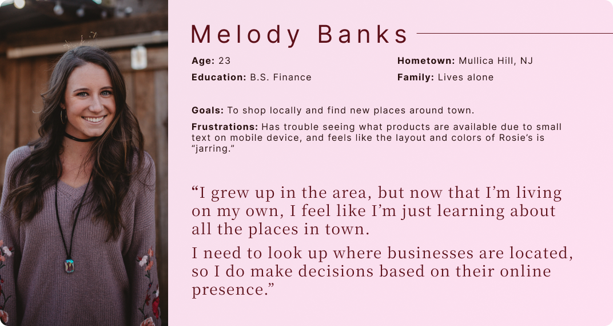
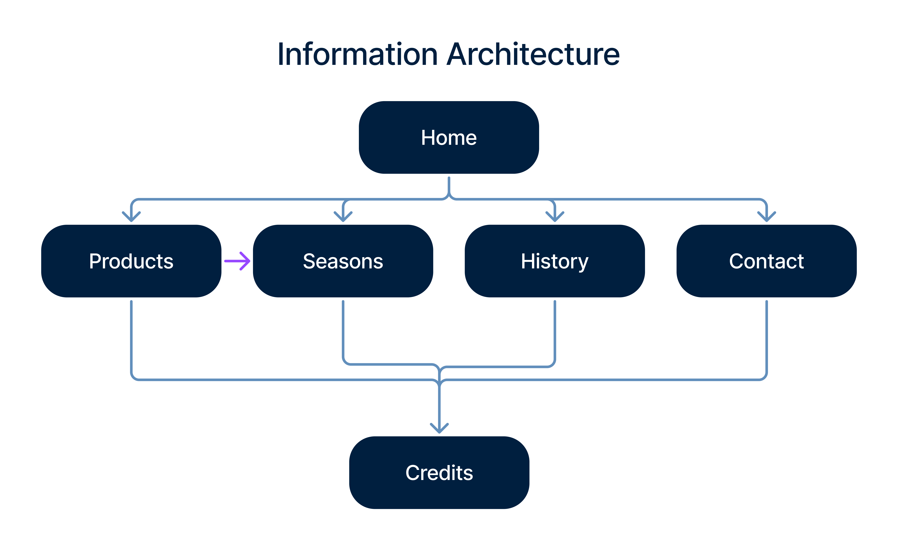
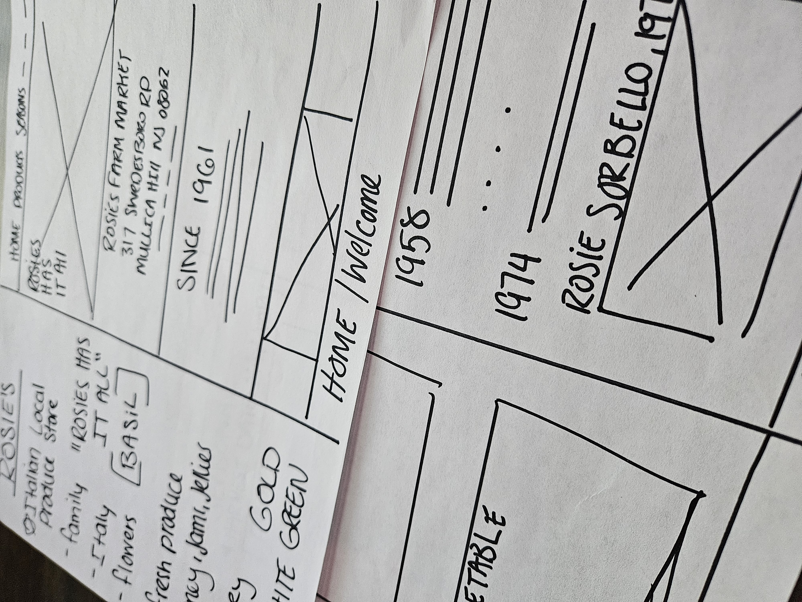

Revamping and Coding a Modern, Accessible Website for a Local
Farmers Market
"Rosie’s Has it All!" - Rosie’s slogan
Redesigning and coding Rosie’s website involved transforming an
outdated and inaccessible site into a modern, user-friendly
experience. My goal was to align the website with contemporary
standards and expectations, ensuring it accurately reflects the
business and meets the needs of today's online environment.
The final product showcases the wide variety of products Rosie’s
carries while communicating their family’s passion for farming
and serving the community.
Define
Project Summary
Problem: An outdated, inaccessible website that does not
reflect the products Rosie’s carries; needs redesign, proper UX,
and updated HTML, CSS, and JS.
Role: UX Designer | Developer | Communications | Research
Duration:July 2022 - February 2023
Team:Independent
Constraints:Maintaining the color scheme, limitations of
a one person team, completing the project before their next
opening season.
My first step was to recognize the values Rosie’s communicates
through their original website
The Goals
-
Improve User Experience Design: Redesign the
local farm market website, giving users the autonomy to
navigate and explore content easily, ensuring a
user-centric design approach.
-
Enhance Accessibility: Ensure that the website is
accessible to all users, highlighting the unique
offerings of the market and connecting personal
interests to various market products and services.
-
Boost Engagement and Responsiveness: Foster a
digital environment where users can see real-world
applications and future opportunities related to their
interests, with a focus on responsive design to enhance
engagement.
An intuitive online experience that
captivates users and highlights their interests in
local farm market offerings, enhancing overall UX design,
accessibility, and responsiveness.
Prepare
Research
I conducted a competitive audit on two of Rosie's competitors:
Visalli's Farm Market and Maugeri's Farm Market. After comparing
the three websites, it was evident that Rosie's website needed
an update.

I made a list of assumptions that I thought users might be
looking for:

User Surveys: Feedback
The next step was to gain user feedback on the original website
I created a survey which I gave to a total of 3 participants.
The user persona of "Melody Banks" was created based of user
feedback

Reviewing the data collected helped assure my assumptions while
providing insight to how the overall design should be.

Design
Rosie's Farm Market
With these goals in mind, I redesigned each page layout,
preserving all the original information while highlighting what
makes Rosie’s unique. Additionally, I enhanced overall
accessibility and responsiveness.
Wireframes

I then designed the High Fidelity prototypes in Figma. I focused
on both desktop and mobile in these mockups. For a more detailed
look, here is the link to my
Figma File
HiFi Prototype

Primary Flow
I then coded the website before presenting my work to Rosie’s. I
aimed to deliver a fully realized product to demonstrate my
skills and commitment to the project.
They embraced the opportunity to join the initiative!
User Testing Feedback
The next step was to gain user feedback on the fully coded
website. There were an additional 2 participants in this study.
After navigating the website, there were a few insights to
better improve on the design.
Final Steps
Finalizing the website included implementing the user feedback
into the design, getting approval from Rosie’s owners, and
uploading the website files to the hosting service.
The final product can be viewed here:
www.rosiesfarmmarket.com
Style Guide

I kept the design of this website as simple as possible,
maintaining a "homegrown" feel. As I would also be coding this
website, I knew the CSS would be a bit exploratory for me, so I
did not preemptively note down specific font size, header size,
etc.
Reflect
Challenges and Solutions:
I initially struggled with maintaining the color scheme (red,
green, white) in the improved website design. I didn’t want the
website colors to clash, or give off a “Christmas” vibe. I found
the material design: Basil, which had a traditional “recipe”
aesthetic. I tweaked the colors slightly, and I thought this
really suited the business.
I also wanted to use Rosie’s family farm photos, but realized
that the resolution for most of the images were very low. I
wanted to maintain the “gritty” look, so I opted not to upscale
with AI. Instead, I used borders and sizing of the images
mindfully so they would appear pleasing to the user, but still
look original and vintage.
Learning & takeaways
I learned so much from this experience from utilizing Figma
components, identifying copyrighted material, to how hosting
services work (just to name a few!). I truly appreciate all that
I gained from designing and coding a fully functional website,
and this experience helped me identify how I would like to grow
more as a designer. I learned HTML, CSS, Javascript, along with
Git, Github, and navigating a Linux OS.
After finishing / launching this website, I decided to better my
understanding of design fundamentals, and completed Gary Simon's
Design Course (which I really enjoyed!!)